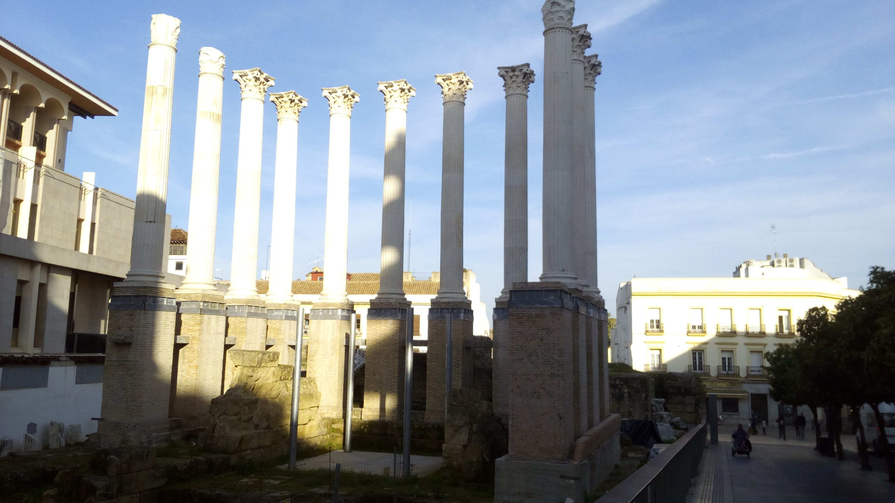

Córdoba Patrimonio

Córdoba fue una ciudad fundada por los romanos durante el siglo II a.C. Por estas tierras han dejado su huella tanto romanos como musulmanes, dejando grandiosos monumentos de referencia como son El Puente Romano, La Mezquita o Medina Azahara. Toda su cultura y monumentos, además de su localización, han convertido este lugar en Patrimonio de la Humanidad.